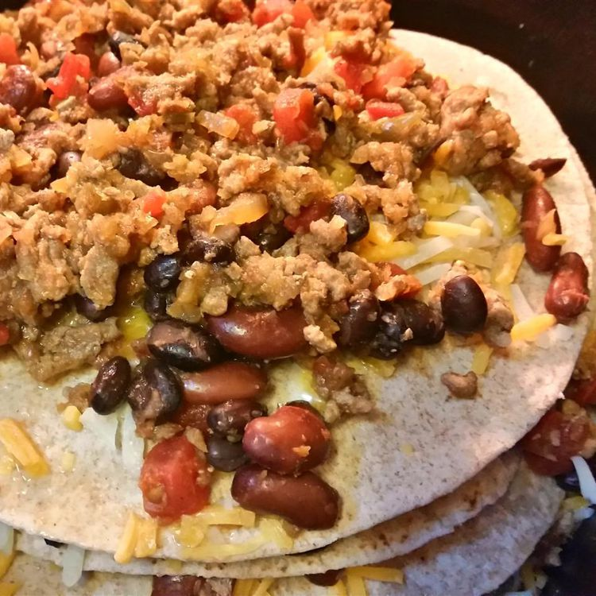

Home
Slow Cooker Enchiladas

An easy and delicious slow cooker recipe for busy school days. Once the prep work is done, you can set it and forget it for the next 5 to 7 hours! Great to make ahead and freeze. Can substitute ground beef for ground turkey and flour tortillas for the corn.
Ingredients:
- 1 pound ground turkey
- 1 cup chopped onion
- 3/4 cup chopped green bell pepper
- 2 cloves garlic, minced
- 1 (16 ounce) can kidney beans, rinsed and drained
- 1 (15 ounce) can black beans, rinsed and drained
- 1 (10 ounce) can diced tomatoes with green chile peppers
- 1/3 cup water
- 1 1/2 teaspoons chili powder
- 1/2 teaspoon ground cumin
- 1/4 teaspoon salt
- 1/4 teaspoon ground black pepper
- 2 cups shredded Cheddar cheese
- 2 cups shredded Monterey Jack cheese
- 6 (6 inch) corn tortillas
Directions:
- Crumble turkey into a large skillet over medium heat. Stir onion, bell pepper, and garlic into the turkey. Cook and stir until turkey is completely browned, 5 to 7 minutes. Add the kidney beans, black beans, diced tomatoes, water, chili powder, cumin, salt, and pepper; bring to a boil, reduce heat to medium-low, place a cover on the skillet, and simmer for 10 minutes.
- Mix Cheddar cheese and Monterey jack cheese together in a bowl.
- Layer about 3/4 cup of the turkey mixture, 1 tortilla, and 1/2 cup the cheese mixture in the bottom of a 5-quart slow cooker; repeat layers until ingredients are fully used, ending with a cheese layer.
- Cook on Low until heated through, 5 to 7 hours.